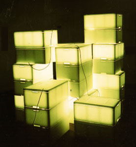
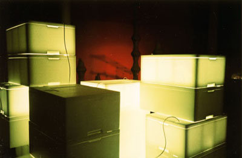

August 29 - September 9


Auckland Sculptor Stella Brennan was the kid who spent her birthday playing with the wrapping and ignoring the presents. Her installation at the Blue Oyster transforms packaging material - the husks of consumer electronics into a shiny, glowing playground of pvc, polystyrene and corrugated cardboard ready for freighting.